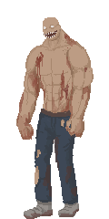
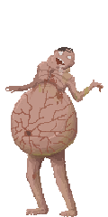
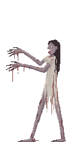
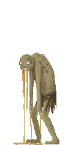

01. 目标画像
01. 以下是所有敌人在进入战斗界面后的形象(并不包含在遗迹内部遭遇的敌人);
02. 泰坦/膨胀者/女巫/喷吐者是在地图上的特殊敌人(以事件形式触发), 其他是在普通战斗中遭遇的敌人形象;
03. 普通敌人分为丧尸和人类各 4 种, 采用哪个形象取决于感染度的高低, 感染度分段数值为 1<~25, 26~45, 46~65, 66~100;
| 泰坦 Boss |
膨胀者 Boss |
女巫 Boss |
喷吐者 Boss |
感染度 1~25 |
感染度 26~45 |
感染度 46~65 |
感染度 66~100 |
感染度 1~25 |
感染度 26~45 |
感染度 46~65 |
感染度 66~100 |
|---|---|---|---|---|---|---|---|---|---|---|---|
|  |  |  |  |  |
 |
 |
 |
 |
 |
 |
 |
02. 人类词条
01. 以下是人类敌人的 Buff, 敌人战力越高, Buff 的数量也会越多且等级越高;
02. 实际上敌人最多能够拥有 4 个 Buff, 但最后那个 Buff 因为 UI 界面有 BUG 被截断了, 所以看不到;
03. 由于允许同类项的存在, 所以敌人也可能出现这种"连发枪x冲锋枪x机关枪=3.75"倍弹药数的情况, 概率很低的啦, 不会那么倒霉吧;
| 名称 | 等级 | 代码 | 描述 |
|---|
03. 丧尸词条
01. 丧尸敌人的 Buff 机制和上面那些人类敌人的 Buff 机制基本上没什么区别;
02. 7 个等级为 99 的 Buff 一般不会在普通敌人身上出现, 它们是地图上 4 种特殊的 Boss 才会携带的;
03. 四种特殊 Boss 分别是: 喷吐者(集群+喷吐+酸液) / 女巫(尸潮+吸收+狂暴) / 膨胀者(吸收+缓慢+暴怒) / 泰坦(泰坦+暴怒+身法);
| 名称 | 等级 | 代码 | 描述 |
|---|
04. 战斗机制
01. 关于战力
在地图上有两种作战模式, 一是事件触发的(包括剧情战斗和踩地图上的问号既主动挑战 Boss), 二是随机触发的(例如在感染区搜刮触发丧尸袭击事件), 这两种情况下敌人的战力高低都取决于一个变量既:感染参数, 对于事件触发的战斗, 这个参数是由事件直接传入的, 可在 工具事件.html 和 行驶事件.html 找到具体事件所传入的参数值, 对于随机触发的战斗, 这个参数由触发战斗时卡车所在位置的感染度和危险度决定, 感染度就是地图上那些红色圈子所代表的数值(Boss 被击败会缩减范围, 数值越大则颜色越深, 会随着游戏时间推进而逐步扩大), 危险度则是卡车滞留时逐步上升的数值(在某地停留就会逐步上升, 常见于搜刮废墟或扎营休息, 卡车开动起来就会逐步降低了), 具体算法: if(危险度 < 感染度*2){ 结果值 = 危险度 }else{ 结果值 = 感染度*2 };, if(结果值 > 100){ 结果值 = 100 };, if(结果值 < 16){ 结果值 = 0 }else if(结果值 < 32){ 结果值 = (结果值-16)/2 }else{ 结果值 = 结果值 - 24 };, 感染参数 = 感染度 + 结果值;, if(感染参数 < 8){ 感染参数 = 8 };, 最终敌人战力范围是: 感染参数*2*随机数(0.85 ~ 1.15);, 假设事件感染参数为 20 则敌人战力为 34 ~ 46, 假设随机触发战斗的感染度为 100 而危险度为 50, 敌人战力范围是 231 ~ 312.
02. 关于守城
自建城在繁荣度大于 10 了就可能触发袭击事件(可能是丧尸也可能是人类), 触发事件的概率是逐日提升的, 每隔 7 天会就进行一次判断, 触发过袭击后有 21 天的 CD 时间, CD 状态中则事件不会再触发, 在遭受袭击时, 敌人的战力为 (自建城繁荣度 * 受袭倍率(默认为 3) * (0.75 ~ 1.25 的随机数)) * 敌人倍率(默认为 2) * (0.85 ~ 1.15 的随机数), 因此可粗略的将敌人的战力概括为繁荣度的 3.825 ~ 8.625 倍, 由于繁荣度最高为 20, 所以敌人的最高战力也就是 20 * 8.625 = 172.5, 跟常规战斗不同的是, 守城战胜利不会触发割肉事件, 而当防御失败, 人类会带走你 25% ~ 75% 物资, 丧尸会带走你 1 ~ 2 人员, 最后值得一提的是, 敌人袭击和商队来访这两个事件是同时进行判断的, 彼此互斥, 不会同时触发(商队事件的 CD 天数为 14, 贸易内容取决于商队所属城市).
03. 关于受伤
先计算敌我双方的战力差值: ((我方战力*敌人减伤词条) - (敌人战力*敌人增伤词条)) - 角色的防御力, 再获取一个 0 ~ 99 的随机数, 如果随机数小于战力差值, 角色就会受伤, 值得注意的是, 防御力在界面显示单位是百分比, 但在计算时是直接使用数值, 跟百分比单位没关系, 按照这个算法, 只有在我方战力比敌人战力高出 100 以上, 才能确保绝对无伤, 但这个战力差可靠装备叠防御来弥补.
04. 关于缴获
战斗结束后可能的战利品有: 01=〇肉(获取一个 0 ~ (100+当前人肉和丧尸肉的拥有量) 的随机数, 当随机数小于敌人战力就触发割肉事件, 数量为 敌人战力/40); 02=零件(当敌人战力大于 50, 获取一个 10 ~ 100 的随机数, 数量为 敌人战力+随机数, 结果在 10 ~ 1000 之间, 当抢劫他人时数量翻 5 倍); 03=弹药(只有面对人类才会缴获弹药, 当敌人战力大于 50, 数量为 零件数/5); 04=政治点(只有面对丧尸才会得到政治点, 当敌人战力大于 100, 数量为战力/40, 最少为 5); 05=其他(由特殊的事件单独控制);
05. 关于场景
01=面对丧尸, 战胜可能会得到零件, 有可能割取丧尸肉, 如果丧尸的战力 >100 还可以得到政治点, 但是如果战败则游戏会直接结束; 02=遭遇匪徒, 战胜可能会得到零件和弹药, 有可能割取人肉, 不会得到政治点, 战败可能只丢失物资, 但也可能会被杀, 导致游戏结束; 03=抢劫他人, 战胜可能会得到零件(有五倍的加成)和弹药, 有可能割取人肉, 不会得到政治点, 将会被赏金猎人盯上, 战败会丢失物资; 04=受到缉捕, 战胜可能会得到零件和弹药, 有可能割取人肉, 不会得到政治点, 战败会丢队友(被赏金猎人抓去领赏), 也可能GG(存疑); 05=特殊事件, 并不是以上的任何一种情况, 这种战斗场景一般都是特殊事件触发的, 将面对特殊的敌人, 这种情况由事件单独控制结果;
06. 关于威胁
地图上的红圈是高感染度地区, 这些高感染区域是会逐步扩张的, 游戏开始后就会进行计算, 每隔 25000 分钟(约 17.36 天) 就会扩张一次, 整个游戏过程中最多扩张次数为 18, 也就是说游戏在 17.36*18=312.5 天后感染区域就会到达峰值, 而每次扩张的范围是 40 单位(差不多一个城市半径那么大), 当我们击败 Boss 后感染区域会有所收缩, 如果击败的是"泰坦", 那么区域收缩 80 单位, 如果击败的是"膨胀者/女巫/喷吐者", 那么区域收缩 40 单位, 而危险度的算法则是, 每隔 55分钟, 危险度增加 当前感染度/5, 除非感染度小于等于 0, 否则增加 1, 与此同时, 每隔当前感染度的时间则危险度 -1, 这也就是说, 在高感染度的地方, 危险度会上升得特别快, 例如在 50 感染度的区域停留, 每隔 55分钟危险度增加 10 而此时危险度衰减速度是每隔 50 分钟 -1.